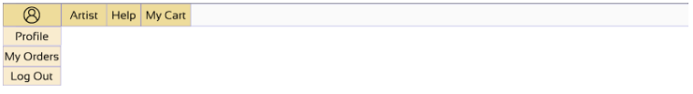
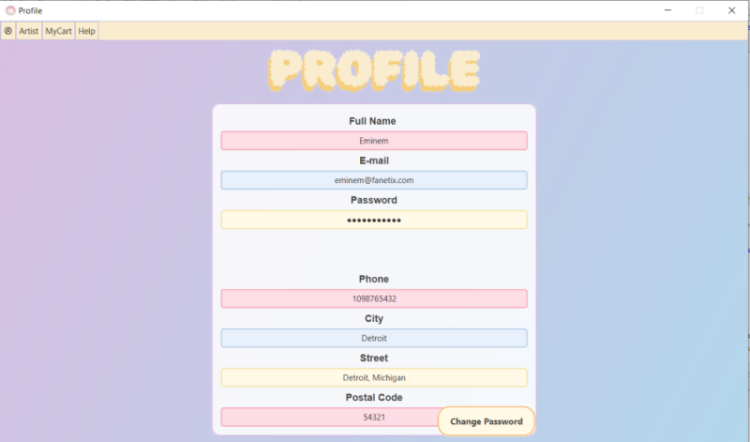
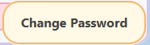

Ayuda Artista Admin
Ayuda Artista Cliente
Ayuda Concierto Admin
Ayuda Concierto Cliente
Ayuda Tienda Admin
Ayuda Tienda Cliente
Ayuda Mi Carrito
Ayuda Mis Pedidos
Menú de navegación

Descripción General
El menú de navegación incorporará elementos que permitirán al usuario moverse entre las distintas ventanas de la aplicación. Entre ellas están:
- Perfil: Donde el usuario podrá ver sus datos.
- Artistas: Accede a la sección de artistas.
- Carrito y Compras: Permite ver y gestionar tus compras.
- Información Auxiliar: Ofrece una guía para el usuario.
- Cerrar sesión: Opción para salir de la aplicación.
Este menú de navegación es común para todas las ventanas de la aplicación.
Perfil personal

Descripción General
En la sección de perfil, el usuario podrá ver y editar sus datos personales. Además, podrá cambiar su contraseña actual por otra nueva mediante una opción específica en esta pantalla.
